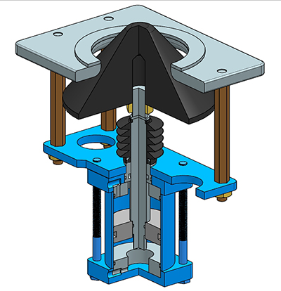

블라스트 부품 / 필러밸브
필러밸브 Filler Valve
쇼트 에어 블라스트 탱크 내부의 상단 및 중간부에 장착되어 탱크 내 쇼트볼·그리트 유입을 개폐 제어하는 복동식 공압 액츄에이터 필러밸브입니다. 콘(Cone)을 이용한 팝업(Pop-up) 방식으로 작동하며, 완제품 세트 또는 콘·시트 등 부품별 개별 구매가 가능합니다.


작동 원리 및 구조적 특징 Features & Mechanism
- 탱크 내부 연마재 유입 제어: 쇼트 에어 블라스트 탱크 내부의 상단과 중간부에 설치되어, 탱크 내로 쇼트볼·그리트가 충진되고 가압 시 밀폐되도록 제어합니다.
- 복동식 공압 액츄에이터 작동: 상·하 복동형 에어 실린더로 각 방향별 에어 공급에 따라 원활하고 안정적으로 승강 작동합니다.
- 콘(Cone) 팝업 개폐 방식: 원뿔형 고무 콘이 시트(Seat)에 밀착·이탈하는 팝업 방식으로 연마재 유입로를 신속하게 개폐합니다.
- 세트 및 부품별 개별 공급: 밸브 전체 세트(Set)는 물론, 마모 소모품인 콘(Cone)과 시트(Seat)만 별도 구매하여 교체할 수 있습니다.
주요 사양 Specifications
| 모델 (Model) | DFV-50AY |
|---|---|
| 작동 방식 (Actuator) | 복동식 공압 액츄에이터 (Double-acting Pneumatic Cylinder) |
| 시트 타입 (Seat Type) | R (Round · 라운드형) / F (Flat · 평자형) |
| 파일럿 포트 (Pilot Port) | PT ¼" |
| 사용 압력 (Working Pressure) | 5 ~ 9 kg/㎠ |
| 중량 (Weight) | 15 kg |
| 소모품 콘 규격 (Cone) | Ø190 (실린더용 · 대) / Ø145 (범용 · 소) |
주요 부속품 상세 Main Components (Cone & Seat)

- 필러밸브 콘 (Filler Valve CONE): 내마모성 연질고무로 제작되어 탱크 내 유입되는 쇼트볼 제어 및 기밀 유지에 효과적입니다. 실린더용 Ø190(대)과 범용 Ø145(소) 두 가지 규격으로 공급됩니다.
- 필러밸브 시트 (Filler Valve SEAT): 블라스트 탱크 형태에 따라 라운드형(R)과 평자형(F) 중 선택할 수 있어, 설비 사양에 맞춰 탱크 내부에 용이하게 고착하고 적절한 탱크 내 공간을 유지할 수 있습니다.
견적·규격 문의 051-319-2332 · daehatw@daum.net